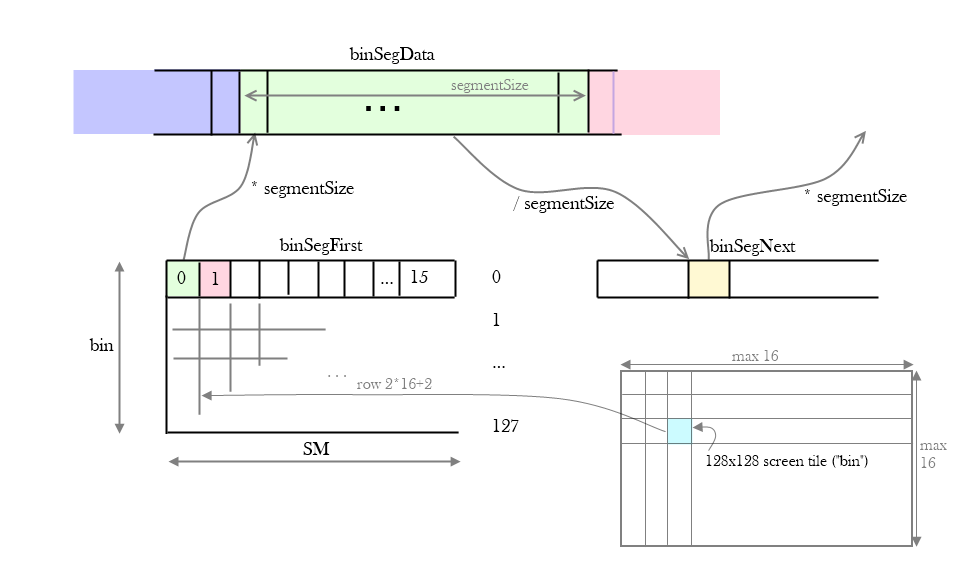

w00t
Jump to navigation14/11/12
 Annotating CudaRaster
Annotating CudaRaster
In the CudaRaster project, Samuli Laine and Tero Karras have implemented a complete triangle rasterizer in Cuda. They explain how it works, and why, in their excellent High-Performance Software Rasterization on GPUs paper. What's more, they've open sourced the implementation, which is fantastic. The code is full of little and big gems, highly efficient ways and tricks to keep those cores busy. It took me a while to wrap my head around it, so in this post I want to share my attempt at demystifying the bin rasterizer phase a little, just to start somewhere.
I've also uploaded a "personal copy" of binRaster.inl; it is taken from version 1.1 but with some extra comments that I added as I worked my way through it. So just to be very clear, I've only added some comments which may or may not be true, helpful or interesting. Otherwise I've made no changes, and the file is most definitely still entirely...
Hopefully it helps understanding the code -- but to use this in your project, just go to the source. Comments that I've added are tagged with "--bpe". There are a few minor commented bits that I'm not repeating in this post.
Digging through the code (and this post) probably makes more sense if you've read the paper. I want to focus on the smarts that are in the actual implementation.
There are five big steps in the bin rasterization process:
This whole process repeats until we're out of triangles.
Before digging into bit twiddling and prefix summing, it's important to understand the overall data layout.
There is one giant array that stores all triangle IDs that passed the bin rasterizer, classified per bin that they appear in. Since triangles may overlap multiple bins, triangle IDs can appear multiple times in this array. It is called appropriately enough binSegData.
Logically it is chopped up in chunks or segments of 512 indices. When a tile has some output for the first time, it grabs a segment, and writes the index of the segment into binFirstSeg.
When the segment is full, a new one is allocated (using atomicInc) and its index is in turn recorded in binNextSeg, at the position of the segment that we just filled up. Hence, you get a classic linked list, except that the next pointer is stored separately, instead of as part of the segment.
binFirstSeg and binNextSeg record segment indices. So to convert this to an offset into binSegData that you can start writing triangles at, you need to multiply with the segment size (512).
Hopefully this picture is a helpful visual summary of this setup.

CORRECTION there are a maximum of 16x16 bins, so there are 256 rows in binFirstSeg, not 128.
Or as my annotations try to clarify:
The first interesting problem, and clever solution, immediately appears in step 1 -- grabbing 512 triangles from the SM's big batch. The difficulty is that the number of input triangles per thread is variable: it can be zero when we've exhausted the input with this thread; and it can be more than one, if the source triangles got clipped into several subtriangles by the previous phase (triangle setup).
This is a specific instance of a general problem of packing work across warps: you want to gather up work items until you have enough of them, and then switch mode to crunching through the whole batch. Then you switch back and get some more work, repeat.
This same pattern appears for example in deferred shading using compute shaders. First we want to discover all the lights that overlap our tile, and keep doing that until we have a large number of them (or we run out of lights). Only then do we switch to "per pixel" mode where now each thread is in charge of one pixel, crunching through all the relevant lights as found in phase one.
A naive approach is to simply have room for N items (triangles, lights) in shared memory and use an atomic increment: when a thread wants to add one or more items to the batch, it increments a shared offset, and if the items still fit in the shared buffer, it adds them. Otherwise, it stops and waits for everybody else to do the same, switching to "processing mode". For example:
The big problem with this approach, besides inefficiency, are the random lights that get dropped if the buffer is full. If there are multiple warps in a block, then there's no guaranteed order in which the warps execute. Likewise, within a warp, there is no guaranteed order in which the InterlockedAdds will execute. So, when we get near the limit, it is essentially random which threads manage to still squeeze a light in, and which ones abandon their input.
A more effective approach is shown in BinRaster: count how many triangles we need for the entire block and reserve enough space for that in one swoop. This total can be computed with a prefix sum across the entire block. If everything fits, then great, all threads can write their output. If not, then there will be exactly one thread that crosses (or starts right after) the boundary. That thread can then figure out how many items will fit, and adjust offsets and counters as needed.
For efficiency, the prefix sum for a block is computed in two steps: first a prefix sum within a warp, followed by summing all the sums across all warps in a block.
Within a warp, a prefix sum of a yes/no, 1/0 value can be computed with this bit of Cuda magic:
__ballot is an intrinsic function that returns a 32-bit value where bit N will be true if 'myBit' was true for thread N, 0 <= N < warpSize (=32).
getLaneMaskLt is a semi-intrinsic that has all bits set whose index is less than our per-warp thread index (that is, our lane).
It follows that __ballot(myBit) & getLaneMaskLt() has bit N set if 'myBit' was true for thread N and N is strictly less than our own lane index.
Finally __popc is an intrinsic that instantly counts the number of bits set in a 32 bit word.
Thus, __popc(__ballot(myBit) & getLaneMaskLt()) tells us how many 'myBits' were set in threads with an index lower than ours. That, indeed, is exactly an exclusive prefix sum of 'myBits' across an entire warp.
If a single bit is not enough, then this process can be repeated for each power of two that the value we wish to sum might be made up of. In BinRaster, we have up to seven triangles per input element, so the full prefix sum is:
To finally sum this up for the entire block, we save the sum to local shared memory, and have the first 16 threads add it all up. No synchronization is needed because we have fewer than 32 threads at work, and they're all packed in a single warp (if (thrInBlock < CR_BIN_WARPS)). No boundary checks are needed, because all elements are offset by 16, and the first 16 elements in shared memory are guaranteed zero. It comes down to:
It's now time to look at those packed triangles, one per thread, and do a low res rasterization: set a bit for each 128x128 bin/tile that a triangle overlaps.
These bits are stored in s_outMask: for each one of up to 16x16 bins, there is a single bit that will be set if the corresponding triangle touches the bin. Since we just tried to pack 512 triangles in Step One, we need 512 bits. A complicating twist is their storage: there are 16 32-bit words -- but they're not consecutive. Rather, we have a group of 16x16 32-bit words per warp:
In the general case the code traverses every pixel in the AABB and uses atomicOr to set all bits inside the triangle. With 128x128 tiles though it's very likely, with reasonable triangles, that most triangles will fit in an entire bin, or at most will touch 1x2, 2x1 or 2x2 tiles, as explained in the paper. The 1x1 case can be optimized as follows.
This code checks if all threads in the current warp have a triangle that fits in a single bin. Note that which bin that is, might be different for every thread! So we still don't know how many bits we'll need to set -- anywhere from one to 32.
Instead of firing off 32 atomic "or"s, the code packs all triangles that touch the same bin into a single mask, and uses a single non-atomic assignment to set it. I will try and let my annotations do the explaining of this magic while (!won) loop:
As mentioned in the paper, for the 2x2 case it's reasonable to assume that the cost of accurate rasterization is higher than just simply marking all four bins; so the code just uses four atomicOr calls.
If at least one triangle in the warp is more complicated than 1x1/1x2/2x1/2x2, there is nothing to be gained from using those optimized branches because we'll have to execute the accurate rasterization loop anyway, for at least one lane. So in that case all triangles follow that code path: both !__any(multi) and !__any(complex) failed.
The full rasterization path traverses the triangle's entire AABB; for each pixel/bit, it computes the distance to the edges using the edge functions, and only when all three distances are non-negative, is the pixel considered inside, and is its bit set. This is a conservative rasterization, snapping the vertices to tile boundaries.
At this point zero or more out of 512 bits are set for each 128x128 bin, indicating which triangles overlap the bin. Counting how many such bits are set tells us how many triangles need to be written to the bin's segment. So step three has two sub-parts: counting bits, and flagging the bins that are about to overflow their segment.
The bitcounting again makes use of popc: __popc(s_outMask[0][thrInBlock]) instantly tells us, for any thread with thrInBlock < numBins, how many triangles touch the bin coming from the first 32 triangles. Summing for all 16 warps (512/32) results in the grand total in, well, total, and an inclusive prefix sum of the count in s_outCount.
s_outOfs[binNumber] points into binSegData, telling us where the next triangle should go for a given bin. We are out of space if writing out 'total' triangles for a bin would cross a segment boundary:
Rather than using an atomicInc per overflowing bin to grab a new segment, we count the number of overflowing bins across the entire warp (ie. for up to 32 overflowing bins in one go, out of a total of maximum 16x16), and give each bin a unique index using prefix sum.
Inside an if branch, __ballot(true) results in a bit mask showing which lanes followed the if-branch. Thus __popc(__ballot(true) & getLaneMaskLt()) is the prefix sum of the "if" condition, in effect telling the thread "within the list of overflowing bins, what is my index?". This is stored in overIndex. We now have an overflow index unique within the warp.
The first overflowing bin/thread in a warp is in charge of doing the atomicAdd to convert the local sums into a block-wide unique index. Since the number of overflowing bins should be very low most of the time, this is probably cheaper than doing a straight prefix sum as in Step One.
When all this is said and done, we have...
Example setup with four overflowing bins.
Now that we have the grand total of overflowing bins in s_overTotal, allocation is simple: exactly one thread uses atomicAdd to increase numBinSegs.
Each thread that's in charge of an overflowing bin can now do a simple bit of bookkeeping to set up its segment. If a bin has never seen any triangles, its s_outOfs will be negative; we just allocated the first segment, so we go ahead and fill in binFirstSeg, see the diagram at the top of the post.
If we already have a valid offset, then we need to set up binSegNext instead. Having a valid value in s_outOfs also means we can compute our current segment: (offset-1) / 512. That is the segment whose 'next' pointer needs to be changed to point to the newly allocated segment.
What happens if the offset is exactly zero, modulo segment size? In this case the previous iteration has written some triangles, and bumped the next write offset to exactly one-past-the-end of the segment it was filling up. Cleverly enough, in that scenario (offset-1)/512 still points to the segment that we just filled, which is still the segment whose next pointer needs to be updated. So it all works beautifully:
Note that at this point, we've merely made sure that the current segment points to a valid new segment if the tile is overflowing (and that said new segment is in turn a proper list sentinel). We haven't adjusted s_outOfs itself yet, which makes sense because only now is it finally time for...
For the final phase, we move away from "one thread per bin" and switch back to "one triangle per thread". Since a triangle may overlap multiple bins, we need a small AABB loop to write the triangle ID to the segment of every bin that the triangle overlaps. Fortunately both the AABB (lox,loy,hix,hiy) and the "does it actually overlap the bin" bitmask (s_outMask) are still available from Step Two.
To be able to write a triangle ID to a bin segment concurrently, we again need a small, local prefix sum to make sure each lane writes to a unique location. What about making sure the location is unique across multiple warps? Well, we still have s_outCount from Step Three telling us how many bits are set for any given warp, inclusive-prefix-summed. In short, if we need to write out a triangle, this will do the trick:
If that index turns out to be bigger than the number of elements still available in the segment, we need to write the element into the next segment -- starting at position zero of course. The trick is that at no point do we modify s_outOfs; thus when multiple warps are touching the same output queue, they will all consistently reach the same conclusion about where to write their output, and when to switch to the next segment, without any synchronization or atomic adds.
It's only when all threads have written their triangles to all bins, that it's time to bump up the segment write pointers in s_outOfs. For this we switch back to one-thread-per-bin.
If there was no overflow then it's easy enough -- s_outOfs[bin] += total. If there is overflow then that same value, s_outOfs + total, needs to be rebased to point inside the newly allocated segment.
... and that's that!
... well, almost. We keep repeating this entire five step process until we've exhausted the number of triangles allocated to this SM. Recall from the paper that "step zero" is to grab a large number of triangles from the input.
Once those are exhausted, we can simply grab a new large chunk, but there's a snatch.
We want to preserve strict input order. But if we simply grabbed more triangles and kept going, there would be partially filled output segments for various bins, and the newly grabbed triangles would be added to those. In short, triangles from way down the line would be moved forward, sneaking in behind a previous batch of triangles.
For this reason it's important to flush the currently outstanding segments, and forcibly allocate a brand new, all empty segment for every bin that's partially filled. If it's not partially filled, then either it's unallocated (s_outOfs < 0) in which case we do nothing. Or we filled it completely, in which case s_outOfs modulo segment size will be zero, and we'll allocate a new segment automatically, as explained earlier.
In fact, the most convenient way to allocate a new segment for every partial-fill is precisely to pretend that it was filled up completely: just record the correct number of elements in binSegCount, and advance s_outOfs to the end of the segment:
... and that's that! For real this time. This concludes, ah, the first step in this pipeline -- the bin rasterization. Happy warping :)
- The coarseRaster stage is analyzed here.
- Triangle Setup is now also covered.
I've also uploaded a "personal copy" of binRaster.inl; it is taken from version 1.1 but with some extra comments that I added as I worked my way through it. So just to be very clear, I've only added some comments which may or may not be true, helpful or interesting. Otherwise I've made no changes, and the file is most definitely still entirely...
* Copyright (c) 2009-2011, NVIDIA Corporation
* All rights reserved. [...]
* THIS SOFTWARE IS PROVIDED BY THE COPYRIGHT HOLDERS AND CONTRIBUTORS "AS IS"
Hopefully it helps understanding the code -- but to use this in your project, just go to the source. Comments that I've added are tagged with "--bpe". There are a few minor commented bits that I'm not repeating in this post.
Overview
Digging through the code (and this post) probably makes more sense if you've read the paper. I want to focus on the smarts that are in the actual implementation.
There are five big steps in the bin rasterization process:
- Grab triangles from the input queue until we have at least 512 of them, enough to give each thread one triangle to process in the subsequent steps;
- Set the bits that indicate which triangle overlaps which bin (one bin is a 128x128 pixels tile);
- Figure out how many bits are set per bin, so we know how many triangles we'll want to write out per bin; count how many bins don't have enough room to actually write out that many triangles;
- For each overflowing bin, allocate a new segment;
- Finally write the triangles to the current segment, switching to the newly allocated segment once it's full.
This whole process repeats until we're out of triangles.
Before digging into bit twiddling and prefix summing, it's important to understand the overall data layout.
There is one giant array that stores all triangle IDs that passed the bin rasterizer, classified per bin that they appear in. Since triangles may overlap multiple bins, triangle IDs can appear multiple times in this array. It is called appropriately enough binSegData.
Logically it is chopped up in chunks or segments of 512 indices. When a tile has some output for the first time, it grabs a segment, and writes the index of the segment into binFirstSeg.
When the segment is full, a new one is allocated (using atomicInc) and its index is in turn recorded in binNextSeg, at the position of the segment that we just filled up. Hence, you get a classic linked list, except that the next pointer is stored separately, instead of as part of the segment.
binFirstSeg and binNextSeg record segment indices. So to convert this to an offset into binSegData that you can start writing triangles at, you need to multiply with the segment size (512).
Hopefully this picture is a helpful visual summary of this setup.
{kind=link}
Or as my annotations try to clarify:
//--bpe indices of the segment to use to store triangles for a given bin b as processed by a given SM s:
// binFirstSeg[b][s]. Note these are segment indices, so they need to be multiplied by segment size (512)
// to index into binSegData.
S32* binFirstSeg = (S32*)c_crParams.binFirstSeg;
S32* binTotal = (S32*)c_crParams.binTotal;
S32* binSegData = (S32*)c_crParams.binSegData;
//--bpe points to the index of the next segment;
// mySegment = binFirstSeg[tile*16+sm] // start
// mySegment = binSegNext[mySegment] // jump
// writePos = mySegment * CR_BIN_SEG_SIZE
// binSegData[writePos] = triangleIndex
S32* binSegNext = (S32*)c_crParams.binSegNext;
//--bpe number of triangles stored in a segment. Should be segment size (512), except
// for the last segment in a batch.
S32* binSegCount = (S32*)c_crParams.binSegCount;
Step One: Intra-warp data packing
The first interesting problem, and clever solution, immediately appears in step 1 -- grabbing 512 triangles from the SM's big batch. The difficulty is that the number of input triangles per thread is variable: it can be zero when we've exhausted the input with this thread; and it can be more than one, if the source triangles got clipped into several subtriangles by the previous phase (triangle setup).
This is a specific instance of a general problem of packing work across warps: you want to gather up work items until you have enough of them, and then switch mode to crunching through the whole batch. Then you switch back and get some more work, repeat.
This same pattern appears for example in deferred shading using compute shaders. First we want to discover all the lights that overlap our tile, and keep doing that until we have a large number of them (or we run out of lights). Only then do we switch to "per pixel" mode where now each thread is in charge of one pixel, crunching through all the relevant lights as found in phase one.
A naive approach is to simply have room for N items (triangles, lights) in shared memory and use an atomic increment: when a thread wants to add one or more items to the batch, it increments a shared offset, and if the items still fit in the shared buffer, it adds them. Otherwise, it stops and waits for everybody else to do the same, switching to "processing mode". For example:
groupshared uint visibleLightCount;
groupshared uint visibleLightIndex[ MAX_LIGHT_PER_TILE ];
for each light
{
if ( light in frustum )
{
uint newIndex = 0;
InterlockedAdd( visibleLightCount, 1, newIndex );
if ( newIndex >= MAX_LIGHT_PER_TILE )
{
break ;
}
visibleLightIndex[ newIndex ] = light;
}
}
// switch to per-pixel here, testing every light
// in visibleLightIndex[ 0 ... visibleLightCount-1 ]
The big problem with this approach, besides inefficiency, are the random lights that get dropped if the buffer is full. If there are multiple warps in a block, then there's no guaranteed order in which the warps execute. Likewise, within a warp, there is no guaranteed order in which the InterlockedAdds will execute. So, when we get near the limit, it is essentially random which threads manage to still squeeze a light in, and which ones abandon their input.
A more effective approach is shown in BinRaster: count how many triangles we need for the entire block and reserve enough space for that in one swoop. This total can be computed with a prefix sum across the entire block. If everything fits, then great, all threads can write their output. If not, then there will be exactly one thread that crosses (or starts right after) the boundary. That thread can then figure out how many items will fit, and adjust offsets and counters as needed.
Cuda-style prefix sum
For efficiency, the prefix sum for a block is computed in two steps: first a prefix sum within a warp, followed by summing all the sums across all warps in a block.
Within a warp, a prefix sum of a yes/no, 1/0 value can be computed with this bit of Cuda magic:
// cumulative sum of subtriangles within each warp
U32 myIdx = __popc(__ballot(myBit) & getLaneMaskLt());
__ballot is an intrinsic function that returns a 32-bit value where bit N will be true if 'myBit' was true for thread N, 0 <= N < warpSize (=32).
getLaneMaskLt is a semi-intrinsic that has all bits set whose index is less than our per-warp thread index (that is, our lane).
It follows that __ballot(myBit) & getLaneMaskLt() has bit N set if 'myBit' was true for thread N and N is strictly less than our own lane index.
Finally __popc is an intrinsic that instantly counts the number of bits set in a 32 bit word.
Thus, __popc(__ballot(myBit) & getLaneMaskLt()) tells us how many 'myBits' were set in threads with an index lower than ours. That, indeed, is exactly an exclusive prefix sum of 'myBits' across an entire warp.
If a single bit is not enough, then this process can be repeated for each power of two that the value we wish to sum might be made up of. In BinRaster, we have up to seven triangles per input element, so the full prefix sum is:
//--bpe figure out the total number of triangles for this warp.
// if we're not out of triangles, this should be at least 32 (= num threads per warp),
// but can be more if clipping generated subtriangles.
// cumulative sum of subtriangles within each warp
U32 myIdx = __popc(__ballot(num & 1) & getLaneMaskLt());
if (__any(num > 1))
{
myIdx += __popc(__ballot(num & 2) & getLaneMaskLt()) * 2;
myIdx += __popc(__ballot(num & 4) & getLaneMaskLt()) * 4;
}
To finally sum this up for the entire block, we save the sum to local shared memory, and have the first 16 threads add it all up. No synchronization is needed because we have fewer than 32 threads at work, and they're all packed in a single warp (if (thrInBlock < CR_BIN_WARPS)). No boundary checks are needed, because all elements are offset by 16, and the first 16 elements in shared memory are guaranteed zero. It comes down to:
// first 16 elements of s_broadcast are always zero
if (thrInBlock < 16)
s_broadcast[thrInBlock] = 0;
if (thrInBlock < CR_BIN_WARPS)
{
volatile U32* ptr = &s_broadcast[thrInBlock + 16];
U32 val = *ptr;
val += ptr[-1]; *ptr = val;
val += ptr[-2]; *ptr = val;
val += ptr[-4]; *ptr = val;
val += ptr[-8]; *ptr = val;
// initially assume that we consume everything
s_batchPos = batchPos + CR_BIN_WARPS * 32;
s_bufCount = bufCount + val;
}
__syncthreads();
Step Two: Rasterizing those bits
It's now time to look at those packed triangles, one per thread, and do a low res rasterization: set a bit for each 128x128 bin/tile that a triangle overlaps.
These bits are stored in s_outMask: for each one of up to 16x16 bins, there is a single bit that will be set if the corresponding triangle touches the bin. Since we just tried to pack 512 triangles in Step One, we need 512 bits. A complicating twist is their storage: there are 16 32-bit words -- but they're not consecutive. Rather, we have a group of 16x16 32-bit words per warp:
//--bpe s_outMask[w][t] has bit N set if triangle w x 32 + N overlaps tile number t. t < 16*16.
__shared__ volatile S32 s_outMask [CR_BIN_WARPS][CR_MAXBINS_SQR + 1]; // +1 to avoid bank collisions
//--bpe Step 2: grabbing triangles is done, if input was not exhausted then we now have
// bin_warps * 32 triangles. True count is in bufCount. Set the bits in s_outMask.
// Each thread grabs one triangle, but only sets the bits in the overlapping tiles t for
// s_outMask[ myWarp ][t]. (myWarp == threadIdx.y).
In the general case the code traverses every pixel in the AABB and uses atomicOr to set all bits inside the triangle. With 128x128 tiles though it's very likely, with reasonable triangles, that most triangles will fit in an entire bin, or at most will touch 1x2, 2x1 or 2x2 tiles, as explained in the paper. The 1x1 case can be optimized as follows.
This code checks if all threads in the current warp have a triangle that fits in a single bin. Note that which bin that is, might be different for every thread! So we still don't know how many bits we'll need to set -- anywhere from one to 32.
bool multi = (hix != lox || hiy != loy);
if (!__any(multi))
Instead of firing off 32 atomic "or"s, the code packs all triangles that touch the same bin into a single mask, and uses a single non-atomic assignment to set it. I will try and let my annotations do the explaining of this magic while (!won) loop:
do
{
//--bpe try writing the bin index of our triangle to the shared memory. All threads who haven't yet
// processed their triangle (ie. set its bit in outMask) will try this, and conflict.
s_broadcast[threadIdx.y + 16] = binIdx;
//--bpe figure out who actually won. The ballot mask of threads whose bin index matches the value
// in s_broadcast is exactly the bitmask that needs to be written out.
int winner = s_broadcast[threadIdx.y + 16];
won = (binIdx == winner);
U32 mask = __ballot(won);
//--bpe 'winner' and 'mask' is the same for all threads, so this is not a write conflict.
s_outMask[threadIdx.y][winner] = mask;
//--bpe did we manage to write out our triangle to the right bin? ie. was s_broadcast what it should
// be for our triangle? If so we 'won', exit loop, so we stop contending for s_broadcast.
} while (!won);
As mentioned in the paper, for the 2x2 case it's reasonable to assume that the cost of accurate rasterization is higher than just simply marking all four bins; so the code just uses four atomicOr calls.
If at least one triangle in the warp is more complicated than 1x1/1x2/2x1/2x2, there is nothing to be gained from using those optimized branches because we'll have to execute the accurate rasterization loop anyway, for at least one lane. So in that case all triangles follow that code path: both !__any(multi) and !__any(complex) failed.
The full rasterization path traverses the triangle's entire AABB; for each pixel/bit, it computes the distance to the edges using the edge functions, and only when all three distances are non-negative, is the pixel considered inside, and is its bit set. This is a conservative rasterization, snapping the vertices to tile boundaries.
Step Three: Checking output space
At this point zero or more out of 512 bits are set for each 128x128 bin, indicating which triangles overlap the bin. Counting how many such bits are set tells us how many triangles need to be written to the bin's segment. So step three has two sub-parts: counting bits, and flagging the bins that are about to overflow their segment.
The bitcounting again makes use of popc: __popc(s_outMask[0][thrInBlock]) instantly tells us, for any thread with thrInBlock < numBins, how many triangles touch the bin coming from the first 32 triangles. Summing for all 16 warps (512/32) results in the grand total in, well, total, and an inclusive prefix sum of the count in s_outCount.
s_outOfs[binNumber] points into binSegData, telling us where the next triangle should go for a given bin. We are out of space if writing out 'total' triangles for a bin would cross a segment boundary:
if (((ofs - 1) >> CR_BIN_SEG_LOG2) != (((ofs - 1) + total) >> CR_BIN_SEG_LOG2))
Rather than using an atomicInc per overflowing bin to grab a new segment, we count the number of overflowing bins across the entire warp (ie. for up to 32 overflowing bins in one go, out of a total of maximum 16x16), and give each bin a unique index using prefix sum.
Inside an if branch, __ballot(true) results in a bit mask showing which lanes followed the if-branch. Thus __popc(__ballot(true) & getLaneMaskLt()) is the prefix sum of the "if" condition, in effect telling the thread "within the list of overflowing bins, what is my index?". This is stored in overIndex. We now have an overflow index unique within the warp.
The first overflowing bin/thread in a warp is in charge of doing the atomicAdd to convert the local sums into a block-wide unique index. Since the number of overflowing bins should be very low most of the time, this is probably cheaper than doing a straight prefix sum as in Step One.
When all this is said and done, we have...
- ... checked if a tile is overflowing (overIndex >= 0);
- ... and if so, what its index is in the "list of overflowing tiles" (0 <= overIndex < s_overTotal)
- s_overIndex[0..255] makes overIndex available to all threads, not just the first 256 that worked out the above overIndex value
- s_overTotal: the block-wide number of tiles/bins that is overflowing;
{kind=link}
Step Four: Allocation
Now that we have the grand total of overflowing bins in s_overTotal, allocation is simple: exactly one thread uses atomicAdd to increase numBinSegs.
Each thread that's in charge of an overflowing bin can now do a simple bit of bookkeeping to set up its segment. If a bin has never seen any triangles, its s_outOfs will be negative; we just allocated the first segment, so we go ahead and fill in binFirstSeg, see the diagram at the top of the post.
If we already have a valid offset, then we need to set up binSegNext instead. Having a valid value in s_outOfs also means we can compute our current segment: (offset-1) / 512. That is the segment whose 'next' pointer needs to be changed to point to the newly allocated segment.
What happens if the offset is exactly zero, modulo segment size? In this case the previous iteration has written some triangles, and bumped the next write offset to exactly one-past-the-end of the segment it was filling up. Cleverly enough, in that scenario (offset-1)/512 still points to the segment that we just filled, which is still the segment whose next pointer needs to be updated. So it all works beautifully:
//--bpe
// binSegNext is the next pointer of each segment.Its size is therefor
// sizeof( bigSegData ) / sizeof( segment ) ==
// sizeof( bigSegData ) >> CR_BIN_SEG_LOG2
// which is / 512 resp. >> 9.
// s_outOfs for 'our' tile is an absolute index into binSegData, so convert it back to a
// segment index and mark that entry as pointing to segIdx.
// Note: if ofs % CR_BIN_SEG_SIZE is zero, then subtracting 1 will move it back to the previous segment.
// If the last batch ended at exactly the end of a segment, then this is what we want: the segment
// that we filled up was in fact binSegNext[ ... based on ofs, but one to the left ...] so go and update
// that linked list.
binSegNext[(s_outOfs[thrInBlock] - 1) >> CR_BIN_SEG_LOG2] = segIdx;
Note that at this point, we've merely made sure that the current segment points to a valid new segment if the tile is overflowing (and that said new segment is in turn a proper list sentinel). We haven't adjusted s_outOfs itself yet, which makes sense because only now is it finally time for...
Step Five: Writing the output
//--bpe pre condition: if s_outOfs is < 0 then we have initialized firstSeg to point to a newly allocated
// segment and are ready to emit triangles.
// if s_outOfs is >= 0 then there may still be some free space in the current segment, depending on binSegCount;
// we know we will eventually overflow if overIndex >= 0, for which case we've already initialized a valid next
// segment into binSegNext, with SEG_SIZE free elements.
For the final phase, we move away from "one thread per bin" and switch back to "one triangle per thread". Since a triangle may overlap multiple bins, we need a small AABB loop to write the triangle ID to the segment of every bin that the triangle overlaps. Fortunately both the AABB (lox,loy,hix,hiy) and the "does it actually overlap the bin" bitmask (s_outMask) are still available from Step Two.
To be able to write a triangle ID to a bin segment concurrently, we again need a small, local prefix sum to make sure each lane writes to a unique location. What about making sure the location is unique across multiple warps? Well, we still have s_outCount from Step Three telling us how many bits are set for any given warp, inclusive-prefix-summed. In short, if we need to write out a triangle, this will do the trick:
//--bpe local prefix sum: figure out how-many-th overlapping triangle I am within the warp (not SM)
int idx = __popc(outMask & getLaneMaskLt());
//--bpe convert to a kernel-wide unique number by using the inclusive-prefix-summed totals for this
// tile (# overlapping triangles) in s_outCount
if (threadIdx.y > 0)
idx += s_outCount[threadIdx.y-1][currBin];
If that index turns out to be bigger than the number of elements still available in the segment, we need to write the element into the next segment -- starting at position zero of course. The trick is that at no point do we modify s_outOfs; thus when multiple warps are touching the same output queue, they will all consistently reach the same conclusion about where to write their output, and when to switch to the next segment, without any synchronization or atomic adds.
//--bpe get absolute index (not segment index) into binSegData.
int base = s_outOfs[currBin];
int free = (-base) & (CR_BIN_SEG_SIZE - 1);
//--bpe if segment is full, go to the one we allocated; the unique segment number is in s_overIndex,
// the globally unique base is in allocBase. 'Minus free' means we start at zero.
if (idx >= free)
idx += ((allocBase + s_overIndex[currBin]) << CR_BIN_SEG_LOG2) - free;
else
idx += base;
It's only when all threads have written their triangles to all bins, that it's time to bump up the segment write pointers in s_outOfs. For this we switch back to one-thread-per-bin.
If there was no overflow then it's easy enough -- s_outOfs[bin] += total. If there is overflow then that same value, s_outOfs + total, needs to be rebased to point inside the newly allocated segment.
int addr = oldOfs + total;
//--bpe move into the next segment.
addr = ((addr - 1) & (CR_BIN_SEG_SIZE - 1)) + 1;
addr += (allocBase + overIndex) << CR_BIN_SEG_LOG2;
s_outOfs[thrInBlock] = addr;
... and that's that!
The next batch
... well, almost. We keep repeating this entire five step process until we've exhausted the number of triangles allocated to this SM. Recall from the paper that "step zero" is to grab a large number of triangles from the input.
Once those are exhausted, we can simply grab a new large chunk, but there's a snatch.
We want to preserve strict input order. But if we simply grabbed more triangles and kept going, there would be partially filled output segments for various bins, and the newly grabbed triangles would be added to those. In short, triangles from way down the line would be moved forward, sneaking in behind a previous batch of triangles.
For this reason it's important to flush the currently outstanding segments, and forcibly allocate a brand new, all empty segment for every bin that's partially filled. If it's not partially filled, then either it's unallocated (s_outOfs < 0) in which case we do nothing. Or we filled it completely, in which case s_outOfs modulo segment size will be zero, and we'll allocate a new segment automatically, as explained earlier.
In fact, the most convenient way to allocate a new segment for every partial-fill is precisely to pretend that it was filled up completely: just record the correct number of elements in binSegCount, and advance s_outOfs to the end of the segment:
int ofs = s_outOfs[thrInBlock];
if (ofs & (CR_BIN_SEG_SIZE-1)) // segment partially filled? ie not -1 and not zero modulo segment size.
{
//--bpe note: using "ofs-1" would make no difference here. It would only be wrong if ofs % SEG_SIZE is zero.
// However, in that case the above 'if' fails and we never get here. It means we got exactly to a boundary of
// the next segment after the above loop; nothing to flush, and the next iteration will do the right thing
// (see comment below about ofs manipulation).
// Also binSegCount has been set up with the correct 'default' value for that case (full segment).
int seg = ofs >> CR_BIN_SEG_LOG2;
binSegCount[seg] = ofs & (CR_BIN_SEG_SIZE-1);
//--bpe
// About the 'minus-and': this is equivalent to & !(CR_BIN_SEG_SIZE-1), ie. it 'ands' with b111..111000000000.
// So ofs will be zero, modulo segment size, which will trigger an allocation (because ofs-1 will definitely
// be in a different segment than ofs-1+total for total > 0), but will not trigger initialization of the first
// linked list node (which only happens if ofs < 0).
//
// About the addition: we are currently working in segment (ofs-1) >> 9. When we allocate a new segment,
// we need to add it to the linked list. So we want to set ofs to zero, to trigger allocation of a new
// segment, but we also want to set it up so when we look at the "current" segment using (ofs-1)>>9, we
// end up in the segment we just filled up, so we can write its binSegNext value.
// The solution is to move ofs to element zero of the first segment behind the current one.
// See the adjustment of binSegNext when we allocate memory, which works out nicely if s_outOfs is exactly zero.
s_outOfs[thrInBlock] = (ofs + CR_BIN_SEG_SIZE - 1) & -CR_BIN_SEG_SIZE;
}
... and that's that! For real this time. This concludes, ah, the first step in this pipeline -- the bin rasterization. Happy warping :)
posted at 04:44:50 PM on 11/14/2012
by peirz -
Category: zwans -
Tag: programming / graphics / rendering / deferred / cudaraster